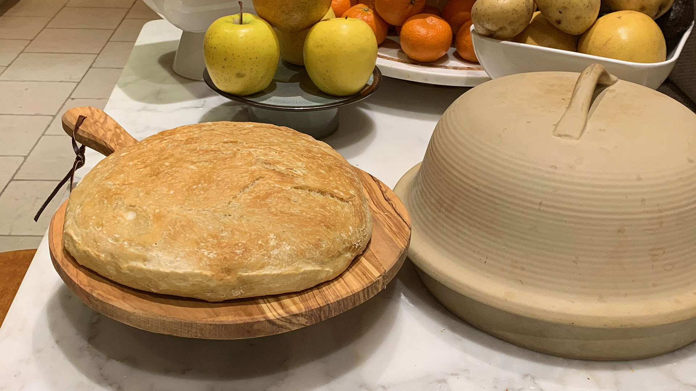
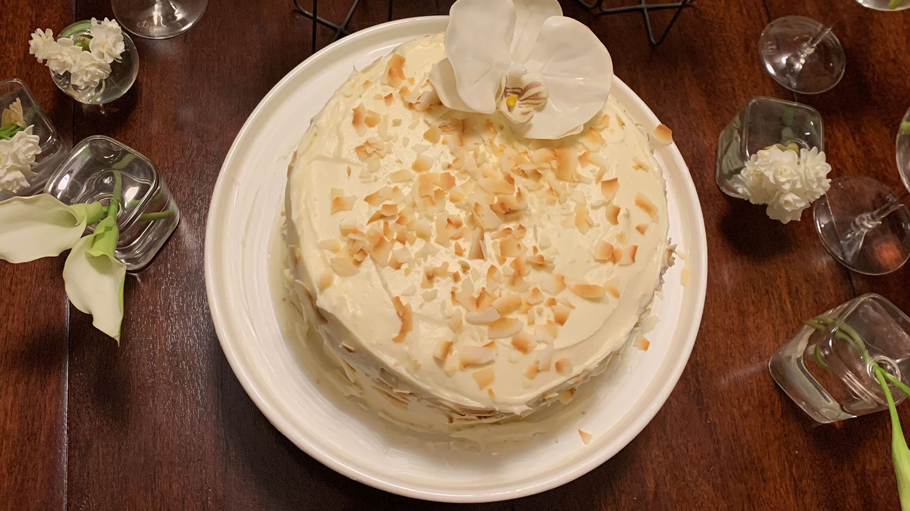

Ever since the pandemic started, I got into baking. It frist started with me baking challah every friday afternoon for shabbat, with my parents. it took a couple months and a lot of different recipes, but I was able to make a challah that taste delicious.
I have also made a lot of differnt kinds of bread as well, such as a no knead bread, a pullman, and a rustic bread. I have also tried my hand in making a coconut flan, lemon yogurt cake, chocolate yogurt cake, and some candy apples as well.
Lately I have really gotten into baking birthday cakes for my friends and family members. so far I have made a coconut cake and an apple cake. Right now I'm in the process of making a chocolate yellow cake for my brother's birthday. Baking has definetly becomeone of my outlets during the pandemic.
